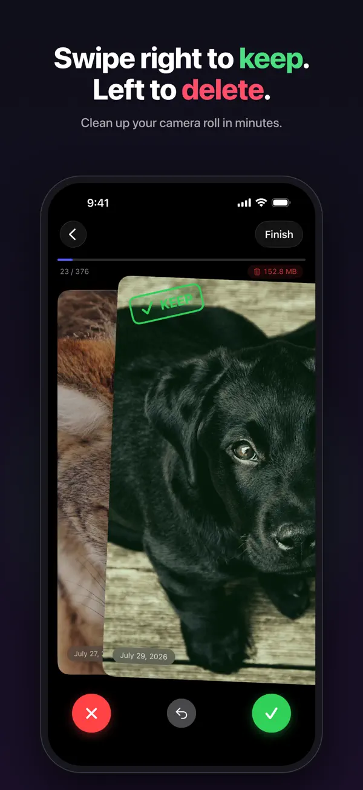
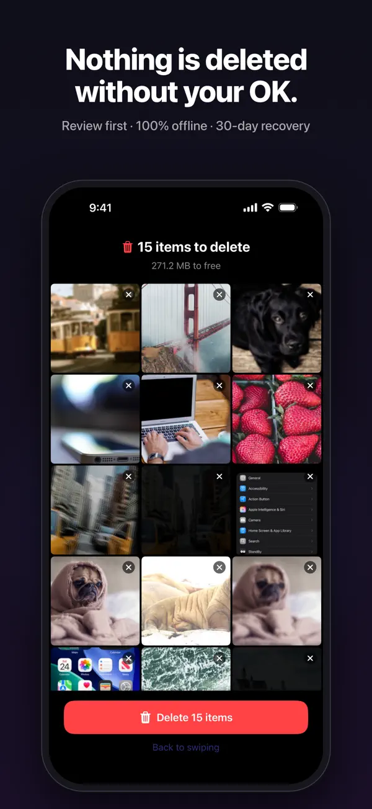

Free up your iPhone.
Swipe left to delete, right to keep.
Swiped is a free photo and video cleaner for iPhone and iPad. Sort thousands of photos in minutes, with no ads, no subscription and no account. Your photos never leave your phone.
- Free
- No ads
- No subscription
- No account
- Nothing leaves your iPhone




How it works
- 1Pick an album, or your whole camera roll.
- 2Swipe right to keep, left to delete. Undo anytime.
- 3Review your picks, confirm, and free up space.
Everything you need, nothing you don't
Private by design
Everything happens on your iPhone. Swiped collects no data: “Data Not Collected” on the App Store.
Safe deleting
Nothing is deleted until you review your picks. Deleted photos stay in Recently Deleted for 30 days.
Find the big stuff
Filter by photos, videos or screenshots, by date and by size, to find the files that take the most space.
Space counter
See how many megabytes you are about to free, live, as you swipe.
Unlimited undo
Changed your mind? Go back as many cards as you want.
Pick up later
Your session is saved after every swipe. Come back tomorrow and carry on.
Questions
Is Swiped really free?
Yes. Swiping, reviewing and deleting are free, with no ads, no subscription and no account. Optional extras may come later as a one-time purchase, never as a subscription.
Do my photos leave my iPhone?
No. Swiped looks at your photos on your iPhone only. It has no server and collects no data.
What happens to the photos I delete?
Nothing is deleted until you confirm. iOS then moves them to Recently Deleted, where you can recover them for 30 days.
Does it work with iCloud Photos?
Yes. Photos stored in iCloud show up too, and deleting a photo in Swiped deletes it everywhere, just like in the Photos app.
Which devices are supported?
iPhone and iPad with iOS 16 or later, in 9 languages.
Is there an Android version?
No. Swiped is made for iPhone and iPad only. Apps with a similar name on Android or elsewhere on the App Store are not related to it.
Swiped: Photo & Video Cleaner
Download on the App StoreiPhone · iPad · Free